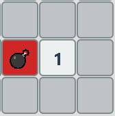
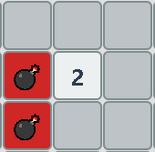
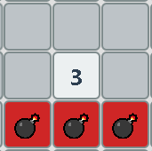
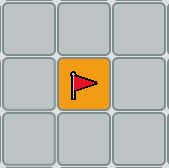

Descubrir todas las casillas que no tienen minas. Si haces clic en una mina, pierdes.
Los números indican cuántas minas hay en las casillas adyacentes:
  Usa banderas para marcar casillas donde crees que hay una mina.
Si haces clic en una mina perderas la partida.